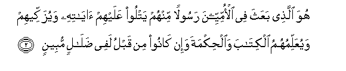

Sacred Texts Islam Index
Hypertext Qur'an Unicode Palmer Pickthall Yusuf Ali English Rodwell
Sūra LXII.: Jumu‘a, or the Assembly (Friday) Prayer. Index
Previous Next

The Holy Quran, tr. by Yusuf Ali, [1934], at sacred-texts.com
Sūra LXII.: Jumu‘a, or the Assembly (Friday) Prayer.
Section 1
1. Yusabbihu lillahi ma fee alssamawati wama fee al-ardi almaliki alquddoosi alAAazeezi alhakeemi
1. Whatever is
In the heavens and
On earth, doth declare
The Praises and Glory
Of God,—the Sovereign,
The Holy One, the Exalted
In Might, the Wise.

2. Huwa allathee baAAatha fee al-ommiyyeena rasoolan minhum yatloo AAalayhim ayatihi wayuzakkeehim wayuAAallimuhumu alkitaba waalhikmata wa-in kanoo min qablu lafee dalalin mubeenin
2. It is He Who has sent
Amongst the Unlettered
An apostle from among
Themselves, to rehearse
To them His Signs,
To sanctify them, and
To instruct them in Scripture
And Wisdom,—although
They had been, before,
In manifest error;—
3. Waakhareena minhum lamma yalhaqoo bihim wahuwa alAAazeezu alhakeemu
3. As well as (to confer
All these benefits upon)
Others of them, who
Have not already joined them:
And He is Exalted
In Might, Wise.
4. Thalika fadlu Allahi yu/teehi man yashao waAllahu thoo alfadli alAAatheemi
4. Such is the Bounty of God,
Which He bestows
On whom He will:
And God is the Lord
Of the highest bounty.
5. Mathalu allatheena hummiloo alttawrata thumma lam yahmilooha kamathali alhimari yahmilu asfaran bi/sa mathalu alqawmi allatheena kaththaboo bi-ayati Allahi waAllahu la yahdee alqawma alththalimeena
5. The similitude of those
Who were charged
With the (obligations
Of the) Mosaic Law,
But who subsequently failed
In those (obligations), is
That of a donkey
Which carries huge tomes
(But understands them not).
Evil is the similitude
Of people who falsify
The Signs of God:
And God guides not
People who do wrong.
6. Qul ya ayyuha allatheena hadoo in zaAAamtum annakum awliyao lillahi min dooni alnnasi fatamannawoo almawta in kuntum sadiqeena
6. Say: "O ye that
Stand on Judaism!
If ye think that ye
Are friends to God,
To the exclusion of
(Other) men, then express
Your desire for Death,
If ye are truthful!"
7. Wala yatamannawnahu abadan bima qaddamat aydeehim waAllahu AAaleemun bialththalimeena
7. But never will they
Express their desire
(For Death), because of
The (deeds) their hands
Have sent on before them!
And God knows well
Those that do wrong!
8. Qul inna almawta allathee tafirroona minhu fa-innahu mulaqeekum thumma turaddoona ila AAalimi alghaybi waalshshahadati fayunabbi-okum bima kuntum taAAmaloona
8. Say: "The Death from which
Ye flee will truly
Overtake you: then will
Ye be sent back
To the Knower of things
Secret and open: and He
Will tell you (the truth
Of) the things that ye did!"